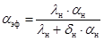
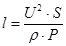
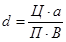
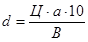
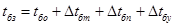
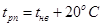
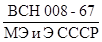
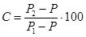

Министерство
монтажных и специальных
строительных работ СССР
Утверждаю:
заместитель министра
монтажных и специальных
строительных работ СССР
Л.Д. Солоденников
5 августа 1974 г.
ИНСТРУКЦИЯ
ПО
БЕТОНИРОВАНИЮ КОНСТРУКЦИЙ ТЯЖЕЛЫХ МОРСКИХ ПРИЧАЛОВ, ВОЗВОДИМЫХ В УСЛОВИЯХ
НИЗКОТЕМПЕРАТУРНОЙ СРЕДЫ
ВСН 336-74
ММСС СССР
Центральное
бюро
научно-технической информации
Москва -1977
В настоящей инструкции приведены составы бетона, способы их приготовления и укладки, а также методы выдерживания бетона при сооружении свай в металлических оболочках опор глубокого заложения и пролетных строений тяжелых морских причалов в условиях низкотемпературной среды.
Инструкция предназначена для организаций, осуществляющих разработку проекта производства работ и строительство тяжелых морских причалов в условиях полярного морского климата.
Инструкция составлена лабораторией высотных и специальных сооружений (руководитель канд. техн. наук Б.Д. Тринкер, ст. научный сотрудник канд. техн. наук В.А. Швыряев) и лабораторией теплофизических исследований (руководитель канд. техн. наук И.Б. Заседателев, ст. инженер И.В. Дудников) ВНИПИ Теплопроект, лабораторией вибрации и специальных строительных работ ВНИИГС (ст. научный сотрудник канд. техн. наук И.Р. Арабаджян) при участии института Фундаментпроект гл. УП, главный специалист Д.М. Лукацкий) на основании результатов лабораторных, стендовых, производственных исследований и опыта сооружения тяжелого морского причала.
|
Министерство монтажных и специальных строительных работ СССР (Минмонтажспецстрой СССР) |
Ведомственные строительные нормы |
ВСН 336-74 |
|
Инструкция по бетонированию конструкций тяжелых морских причалов, возводимых в условиях низкотемпературной среды |
Взамен МСН 196-68 ММСС СССР МСН 261-71 ММСС СССР |
1.1. Настоящая инструкция распространяется нa бетонирование при минимальной температуре воздуха до -20°С конструкций тяжелых морских причалов:
а) свай в металлических оболочках методом вертикально перемещающейся трубы (ВПТ) подвижными смесями согласно СНиП либо методом ВПТ с применением малоподвижных смесей (диаметр оболочек не более 2500 мм) согласно разделам 6 и 7 данной инструкции при температуре воды 0-8°С. Бетонирование методом ВПТ следует производить до отметки (согласно указаниям проекта), отделяющей подводный бетон от укладываемого насухо. Выше этой отметки бетонирование необходимо производить обычными методами;
б) ростверков при положительной и отрицательной температуре воздуха;
в) стыков пролетных строений при положительной и отрицательной температуре воздуха.
1.2. Бетонирование должно осуществляться в соответствии с проектом производства работ при соблюдении требований СНиП III-В.1-70 "Бетонные и железобетонные конструкции монолитные. Правила производства и приемки работ", "Инструкции по изготовлению и защите бетонных и железобетонных конструкций морских гидротехнических сооружений, возводимых в районах с буровыми климатическими условиями" (ВСН 118-65 Минтранстроя СССР) и настоящей инструкции.
|
Внесена ВНИПИ Теплопроект |
Утверждена
Минмонтажспецстроем СССР |
Срок введения
|
1.3. Подводное бетонирование методом ВПТ с использованием малоподвижных смесей допускается производить в пресных и минерализованных водах на глубине до 50 м. Бетонирование на глубине свыше 50 м должно проверяться экспериментально.
1.4. Марка бетона задается проектом. Проектирование и подбор состава бетона для свай в металлических оболочках и ростверков необходимо осуществлять до плотности и прочности исходя из условий обеспечения заданной подвижности, связности и нерасслаиваемости при вибрировании бетонной смеси и приобретения затвердевшим бетоном заданной прочности и долговечности.
1.5. Величина требуемой прочности бетона, достаточной для восприятия забетонированной железобетонной конструкцией сваи монтажных нагрузок без нарушения прочности оцепления бетона с армокаркасом и оболочкой, определяется по расчету, но не должна быть ниже 50% R28. В остальных случаях (см. п. 1.1,б и 1.1,в) к моменту остывания бетона до 0°С прочность должна составлять не менее 70% марочной.
2.1. Требования, предъявляемые к материалам для приготовления бетона, которые приведены в данном разделе, следует рассматривать как технические условия на применение этих материалов.
2.2. В качестве вяжущего для приготовления бетона должен применяться сульфатостойкий портландцемент марки не ниже 400, отвечающий требованиям ГОСТа 10178-62Х "Портландцемент, шлакопортландцемент, пуццолановый портландцемент и их разновидности".
Применяемый цемент должен отвечать следующим дополнительным требованиям:
а) нормальная густота цементного теста должна быть не более 26%;
б) иметь начало схватывания не ранее чем через 2 ч после его затворения;
в) содержание щелочей в клинкере не должно превышать 0,6% (в пересчете на Nа2О), свободной извести - 0,5%; нерастворимый осадок - 0,5%;
г) потеря при прокаливании цемента, хранившегося на складе, должна быть не более 1%.
2.3. Сульфатостойкий портландцемент должен поступать с одного завода и иметь паспорт. На каждую партию цемента должны быть запрошены с завода данные результатов физико-механических испытаний цемента, химических и петрографических анализов клинкера, а также данные о содержании в цементе гипса.
2.4. Каждая партия поступившего на строительство цемента должна храниться раздельно в закрытых складских помещениях.
2.5. Заполнители для бетона должны отвечать требованиям ГОСТа 4797-69 "Бетон гидротехнический. Технические требования к материалам для его приготовления".
Заполнители не должны содержать минералов (опал и другие аморфные видоизменения кремнезема, кремнистые сланцы, пирит и др.), способных вступать в реакцию со щелочами портландцемента.
2.6. В качестве мелкого заполнителя необходимо применять чистый кварцевый или полевошпатный песок с модулем крупности в пределах от 2,0 до 2,5.
2.7. Песок следует хранить на бетонном заводе под укрытием во избежание его загрязнения и увлажнения.
2.8. В качестве крупного, заполнителя может применяться щебень (либо смесь щебня с гравием) из плотных и прочных свежих невыветрившихся пород фракций 5-10, 5-20 или 5-40 мм с пределом прочности при сжатии не менее 1000 кгс/см2, удовлетворяющий требованиям ГОСТа 4797-69.
2.9. Крупный заполнитель следует применять фракционированным. При наибольшей крупности щебня 40 мм его необходимо разделить не менее чем на две фракции: 5-20 и 20-40 мм. Соотношение между фракциями и зерновой состав каждой фракции должны удовлетворять требованиям ГОСТа 4797-69.
Крупный заполнитель должен быть промыт для удаления глинистых, илистых или пылевидных частиц. Крупный заполнитель необходимо хранить на бетонном заводе под укрытием.
2.10. Перед подачей в бункер бетонного завода крупный заполнитель рекомендуется пропускать через контрольные сита 40×40 мм для отсева крупных зерен.
2.11. Для промывки заполнителей и приготовления бетона следует применять любую пригодную для питья воду, соответствующую требованиям ГОСТа 4797-69.
2.12. Для снижения водопотребности, расхода цемента, а также для улучшения технологических свойств бетонных смесей и технических свойств бетона при приготовлении бетонных смесей следует вводить в их состав поверхностно-активные вещества:
сульфитно-дрожжевую бражку (СДБ) по МРТУ 13-04-35-66;
смолу нейтрализованную воздухововлекающую (СНВ) по ГОСТу 10834-64;
комплексные добавки: СДБ + ГКЖ-94 (ГКЖ-94 должна соответствовать требованиям ГОСТа 10834-64).
2.13. Концентраты добавок СДБ (ССБ), СНВ и ГКЖ-94 должны храниться на бетонном заводе в водонепроницаемых бочках или на закрытых складах.
3.1. При возведении свай в металлических оболочках и ростверков тяжелого причала следует применять бетон в соответствии с требованиями ГОСТа 4795-68 "Бетон гидротехнический. Технические требования".
3.2. Для бетона зоны переменного уровня водоцементное отношение (В/Ц) задается заранее и должно быть не выше 0,4 независимо от марки цемента.
3.3. Затвердевший бетон должен иметь марку в соответствии с требованиями ГОСТа 4795-68 не ниже:
для подводного бетона по прочности 300;
для бетона ростверков и заделки стыков 400;
по морозостойкости для переменного уровня и ростверков 300;
по водонепроницаемости 8.
3.4. При подборе составов бетона следует обязательно вводить в бетонную смесь добавку СДБ (или ССБ) в количестве 0,15-0,2% либо СНВ - 0,01-0,02% от массы цемента, либо комплексные добавки: СДБ - 0,1-0,2% + СНВ - 0,005-0,015% (при этом количество вовлеченного воздуха в бетоне должно находиться в пределах 3,5-5%) или СДБ - 0,1-0,2% + ГКЖ-94 - 0,05-0,08%.
Малоподвижная бетонная смесь для подводного бетонирования при укладке должна иметь следующие параметры:
а) жесткость по ГОСТу 4799-69 5-7 с;
б) осадка стандартного конуса:
на смеси гравия со щебнем 2-5 см;
на щебне 4-5 см;
в) текучесть по лотку (метод ее определения см. в приложении 8) не более 40 с.
3.6. Показатель сохранения подвижности бетонной смеси при бетонировании методом ВПТ без вибрации должен быть не менее 40 мин. Бетонная смесь должна сохранять подвижность в течение времени, необходимого для ее транспортировки и укладки.
3.7. Рекомендуемые составы бетона для бетонирования свай, ростверков и стыков пролетных строений приведены в табл. 1.
Таблица 1
|
В/Ц |
Осадка конуса, см |
Расход материалов на 1 м3 бетона, кг |
||||||
|
цемент |
щебень |
песок |
вода |
СДБ |
СНВ |
|||
|
1 |
2 |
3 |
4 |
5 |
6 |
7 |
8 |
9 |
|
Бетонирование сваи методом ВПТ |
0,45 |
I8-20 |
490 |
830 |
830 |
220 |
1,0 |
0,06 |
|
Бетонирование сваи методом ВПТ (первая порция) |
0,37 |
16-18 |
635 |
800 |
800 |
235 |
0,95 |
- |
|
Бетонирование сваи методом ВПТ малоподвижными смесями |
0,5 |
4-5 |
356 |
1250 |
600 |
178 |
0,5 |
0,05 |
|
Бетонирование ростверков и оголовков свай обычным методом |
0,4 |
7-9 |
400 |
1200 |
640 |
160 |
0,6 |
0,06 |
|
Бетонирование верхних и нижних стыков пролетных строений и стенок каналов промышленных проводок |
0,4 |
3-4 |
388 |
1190 |
640 |
155 |
0,6 |
0,05 |
Примечание. Приведенные составы следует уточнять на месте работ каждый раз при получении новых партий материалов. Составы подобраны на песке с Мкр = 2,2, щебне с Нкр = 40 мм и сульфатостойком портландцементе с НГ 25%.
4.1. При естественном твердении бетона в конструкции сваи наблюдается большой градиент температур по ее высоте в зоне заделки. За счет экзотермических реакций гидратации цемента бетон в зоне скального основания (нижние 2,5-3 м сваи) имеет температуру на 25-30°С выше, чем бетон в зонах сваи, расположенных в водной среде. Это вызывает опасные растягивающие термонапряжения в бетоне в зоне заделки после его остывания до температуры окружающей среды и может явиться причиной снижения качества конструкции.
4.2. Выдерживание бетона свай в металлических оболочках в зависимости от необходимой интенсивности его твердения и требований, предъявляемых к предварительному термонапряженному состоянию конструкции, может быть произведено одним из следующих способов:
а) методом термоса (на металлическую оболочку сваи наносится тепловая изоляция);
б) методом регулируемого термоса (защитный слой бетона сваи, с нанесенной на ее оболочку тепловой изоляцией, подвергается регулируемому электровоздействию).
Метод термоса
4.3. Выдерживание бетона в свае по методу термоса позволяет существенно снизить температурный градиент в конструкции и получить требуемые 50% от R28 через 5 суток вместо 10-15 суток при твердении бетона в неизолированной свае.
4.4. Для свай в металлических оболочках рекомендуется тепловая изоляция двух типов: намокающая и ненамокающая. Наиболее доступным видом намокающей изоляции является минеральный войлок, выпускаемый в виде мягких плит (объемная масса g = 150 кг/м3, коэффициент теплопроводности в сухом состоянии l = 0,05 ккал/м×ч×град).
Лучшим видом ненамокающей изоляции является пористая резина (g = 400 кг/м3, l = 0,07 ккал/ м×ч×град).
4.5. Оптимальную толщину изоляции необходимо определять теплотехническим расчетом исходя из необходимости снижения интенсивности теплообмена с водной средой в 100-150 раз по сравнению с неизолированной сваей. Для условий Баренцева моря со средней температурой воды 2-4 и 6-8°С соответственно в зимних и летних условиях изоляция должна обеспечивать снижение эффективного коэффициента теплоотдачи до величины aэф = 3¸5 ккал/ м×ч×град.

где lн - коэффициент теплопроводности изоляции, ккал/ м×ч×град; aн - коэффициент теплообмена на открытой поверхности, ккал/ м×ч×град; dи - толщина изоляции, м
Эти условия обеспечиваются при толщине теплоизоляции 150 мм из минерального войлока или 20 мм из пористой резины.
4.6. Изоляция на оболочке сваи должна монтироваться в виде бандажей, длина которых равна периметру сваи, а высота составлять 0,5-1,0 м. Поскольку монтаж изоляции на оболочке ведется водолазами, необходимо, чтобы затяжные устройства; бандажей имели простую и надежную конструкцию (ремни с пряжкой, накидные защелки).
4.7. Нижней границей изоляции оболочки является поверхность пород, верхняя граница располагается на 0,5 м выше проектной отметки бетонирования сваи.
4.8. При монтаже бандажей изоляции должны обеспечиваться плотное прилегание их по всему периметру к оболочке и плотная стыковка между собой.
Для облегчения монтажа бандажи из пористой резины должны иметь инвентарные пригрузы, снижающие ее плавучесть.
4.9. Монтаж изоляции необходимо выполнять после установки оболочки в проектное положение, перед началом бетонирования. Демонтаж изоляции производится через 3-5 суток после окончания бетонирования, в зависимости от принятого метода выдерживания бетона.
4.10. Бандажи из пористой резины предназначены для многократного использования, включая периоды года с отрицательной температурой наружного воздуха.
Бандажи из намокающей изоляции предназначены для двух-, трехкратного использования (при условии перемещения их с оболочки на оболочку в подводном положении).
Поскольку стоимость намокающей и ненамокающей изоляции примерно одинакова, в качестве оптимальной рекомендуется к применению изоляция из пористой резины.
Метод регулируемого термоса
4.11. Метод регулируемого термоса заключается в создании термоактивности защитного слоя бетона сваи (с нанесенной на ее оболочку тепловой изоляцией) за счет его электропрогрева. При этом основной массив бетона выдерживается по методу термоса. Метод регулируемого термоса позволяет обеспечить наиболее благоприятное предварительное термонапряженное состояние конструкции в заделке и сократить время набора бетоном прочности (50% от марки) до трех суток.
4.12. Активный прогрев бетона осуществляется только в объеме защитного слоя. Электродами при этом служат армокаркас (фаза) и оболочка (земля).
4.13. Прогрев бетона производится электрическим током пониженного напряжения (30-50 В) с использованием в схеме электроснабжения сварочных трансформаторов.
4.14. Корректировку параметров электропрогрева бетона следует осуществлять по показаниям контрольных термопар и показывающих приборов амперметров и вольтметров).
4.15. Перед началом работ по данным табл. 1 приложения 1 и рис. 1 следует подобрать число сварочных трансформаторов, схему их соединения по высокой стороне и схему монтажа оборудования для электропрогрева. Эта таблица составлена на основании экспериментальных исследований и. аналитических расчетов для сваи диаметром 1,6 м.
Рис. 1. Схема соединения
трансформаторов:
1 -
сварочный трансформатор; 2 - амперметр переменного тока (0-600 А); 3 -
трансформатор тока (600/5А); 4 - силовой кабель. типа КРПТ сечением 4×50 мм2;
5 - силовой кабель типа КРПТ сечением 2×50 мм2; 6 - вольтметр
переменного тока (0-150 В); 7 - направляющая; 8 - блок. управления; 9 -
амперметр переменного тока (0-250 А); 10 - вольтметр переменного тока (0-500 В)
4.16. В качестве понизительных трансформаторов рекомендуется использовать сварочные трансформаторы типа ТС-500. Соединенные по принятой схеме трансформаторы необходимо отрегулировать на холостом ходу для получения на низкой стороне каждого трансформатора однозначного максимального напряжения.
4.17. Питание системы осуществляется от блока управления, имеющего кнопку управления и плавкие вставки.
4.18. Трансформаторы целесообразно установить вблизи бетонируемой сваи на палубе кондуктора, что обеспечивает минимальную протяженность кабельных линий.
4.19. Подключение трансформаторов и их объединение в группы осуществляется кабелем типа КРПТ сечением 2×50 мм2.
Для подсоединения армокаркаса и оболочки сваи к трансформаторам используется кабель типа КРПТ сечением 4×50 мм2.
4.20. Сечение кабелей подбирается по таблице допустимых нагрузок (см. приложение 3). Для подключения кабелей используются медные стандартные наконечники.
4.21. По низкой стороне во всех случаях трансформаторы соединяются параллельно, что позволяет иметь в цепи: прогрева требуемые величины тока.
4.22. При подключении трансформаторов к сети и оболочке необходимо строго следить за соединением одноименных клемм.
4.23. Для достижения соосности армокаркаса и оболочки, а также с целью обеспечения электрической изоляции их друг от друга следует установить на армокаркасе текстолитовые направляющие толщиной 30 мм (см. рис. 1).
4.24. При монтаже направляющих на армокаркасе необходимо учесть, что максимальный зазор между направляющей и оболочкой не должен превышать 15 мм с каждой стороны.
Армокаркас не должен иметь металлических деталей, выступающих в защитный слой бетона.
4.25. На армокаркас и оболочку равномерно по периметру сваи необходимо приварить по три клеммы для подключения их к трансформаторам.
4.26. Нижняя часть армокаркаса, расположенная в морене и скале, перед его установкой должна быть покрыта электроизолирующим водостойким лаком.
4.27. Выдерживание бетона в конструкции частично затапливаемых ростверков и в оголовках сваи (часть сваи выше отметки окончания подводного бетонирования) необходимо производить по методу термоса.
4.28. Тепловой защитой бетона ростверка является его постоянная опалубка, состоящая из двух слоев досок толщиной по 40 мм и полиизобутиленовой прокладки между ними. Открытая поверхность бетона ростверка должна изолироваться слоем пергамина или толя и слоем опилок толщиной до 150 мм (или шлаковаты толщиной до 100 мм).
4.29. В период максимальных приливов необходимо принимать меры против затапливания верхней поверхности забетонированного ростверка водой в течение всего периода выдерживания бетона.
4.30. Перед началом бетонирования на наружную поверхность оболочек свай в зоне укладки бетона должна быть нанесена тепловая изоляция в виде бандажей из пористой резины (l = 0,07 ккал/м×ч×град, g = 400 кг/м3) толщиной 40 мм.
Использование изоляции из шлаковаты в зоне переменного уровня воды недопустимо.
4.31. Для предотвращения раннего замораживания бетона, а также получения заданной прочности бетона в элементах пролетного строения необходимо до начала бетонирования прогревать стыки с помощью греющей опалубки.
Верхние стыки следует бетонировать предварительно электроразогретыми бетонными смесями с последующим обогревом уложенного бетона греющей опалубкой.
4.32. Выдерживание бетона в стенках каналов промпроводок должно осуществляться с помощью двустороннего обогрева в греющей опалубке.
4.33. Греющая опалубка устанавливается таким образом, чтобы она перекрывала прилегающие элементы сборного железобетона не менее чем на 400-500 мм. В целях облегчения монтажа и демонтажа опалубку целеособразно объединять в блоки по 5-6 щитов, жестко скрепленных между собой.
Для плотного соединения щитов опалубки друг с другом целесообразно использовать эксцентриковые зажимы (рис. 2).
Рис. 2. Щит электроопалубки:
1 -
стандартный лист опалубки; 2 - эксцентриковый зажим; 3 - электровилка; 4 - лист
асбошифера; 5 - лист фанеры; 6 - проволочный нагреватель; 7 - минеральная вата;
8 - лист асбеста
4.34. Термовкладыш щита греющей опалубки представляет собой плоский нагреватель из стальной или нихромовой проволоки диаметром 0,3-2,0 мм, намотанной на лист асбошифера. Нагреватель с обеих сторон изолируется листами асбеста. На внешней стороне нагревателя предусмотрена тепловая изоляция из минеральной ваты толщиной 30-40 мм, которая прижата к асбесту листом фанеры или аргалита.
Концы нагревателя выводятся наружу и закрепляются специальным клеммником.
4.35. Щиты опалубки, предназначенные для обогрева стыков и работающие в горизонтальном положении, должны быть конструктивно защищены от попадания в них воды.
4.36. Проволоку нагревателя следует располагать на одной стороне асбошифера, что уменьшает потери тепла через внешнюю поверхность щита опалубки.
4.37. При одностороннем электрообогреве все щиты, укладываемые на один стык, подключаются к одному трансформатору. На рис. 3 приведена принципиальная схема одновременного подключения трех обогреваемых стыков (продольное сечение их).
Рис. 3. Принципиальная схема
подключения щитов опалубки:
1 -
сеть; 2 - рубильник; 3 - предохранители; 4 - счетчик; 5 - щит автоматики; 6 -
трансформатор; 7 - провода низкого напряжения; 8 - распределительные провода; 9
- провода, подающие ток к нагревателям опалубки; 10 - щиты с нагревателями; 11
- прогреваемый бетон
При двустороннем обогреве все щиты опалубки для одной стенки подключаются к одному трансформатору. В обоих случаях обогрев обслуживается индивидуальной автоматической системой.
4.38. Установочная мощность нагревателя на 1 м2 обогреваемой поверхности при одно- и двустороннем обогреве приведена в табл. 2.
4.39. Длина проволоки нагревателя термовкладыша определяется по формуле

где U - напряжение электрообогрева, В; S - сечение проволоки, мм2; ρ - удельное сопротивление проволоки Ом×мм2/м (для стали ρ = 0,22, для нихрома ρ = 1,65); P - мощность нагревателя, Вт.
Расчет следует производить по максимальному напряжению тока обогрева.
4.40. Установочную мощность понизительных трансформаторов, потребность в электроэнергии и средствах автоматизации, а также сечение проводов и кабелей следует определять исходя из количества одновременно включаемых щитов опалубки и мощности каждого из них.
Технические характеристики понизительных трансформаторов, применяемых при электрообогреве бетона, приведены в приложении 2.
4.41. Питание трансформаторов следует осуществлять от трехфазной сети напряжением 380 В с общим рубильником кабелем типа КРПТ.
Для учета расхода электроэнергии целесообразно установить электросчетчик, защищенный плавкими предохранителями.
4.42. Для определения сечения кабеля и проводов следует пользоваться приложением 3.
4.43. Контакторы системы автоматики следует установить в сети 380/220 В. В сети низкого напряжения допускается установка контакторов только в случае обслуживания одним трансформатором нескольких участков электрообогрева.
4.44. Для подключения распределительных проводов к трансформаторам рекомендуется использовать кабель типа КРПТ. Длина его рассчитывается из условий обогрева всех стыков и стенок одной секции без перестановки трансформаторов.
4.45. В качестве распределительного используется провод типа АПР-500, который закрепляется на блоке щитов опалубки и перемещается вместе с ним.
Таблица 2
|
Толщина прогреваемого бетона, м |
Установочная мощность на 1 м2 обогреваемой поверхности, кВт |
Начальная температура бетона, град |
Предварительное выдерживание |
Разогрев до температуры изотермического выдерживания |
Изотермическое выдерживание при 50°С |
Скорость остывания бетона, град/ч |
|||||
|
Время, ч |
Напряжение, В |
||||||||||
|
Время, ч |
Напряжение, В |
Время, ч |
Напряжение, В |
||||||||
|
Верхние стыки пролетного строения (односторонний обогрев) |
0,2 |
3,7 |
+55 |
- |
- |
- |
- |
40 |
88 |
10 |
|
|
Стенки каналов промышленных проводок (двусторонний обогрев) |
0,25 |
2,55 |
+10 - +15 |
4-5 |
51 |
3-6 |
88 |
45-50 |
51 |
10 |
|
4.46. Подключение нагревателей к распределительным проводам следует осуществлять проводом типа ПРГ-500
4.47. Схема включения понизительных трансформаторов должна обеспечивать возможность получения двух ступеней вторичного напряжения (например, 51 и 88 или 52 и 91,5 В). Переключение ступеней вторичного напряжения необходимо осуществлять реверсивным рубильником.
4.48. Полости нижних стыков, включая расположенную в них арматуру и прилегающие элементы сборного железобетона, должны быть предварительно отогреты с помощью пара или горячего воздуха. Бетонирование нижних стыков следует производить предварительно разогретыми бетонными смесями.
При выдерживании бетона нижних стыков должен быть применен обогрев поверхности уложенного бетона и примыкающих элементов сборного железобетона паром или горячим воздухом. Расход и параметры пара необходимо выбирать опытным путем исходя из условия создания в полости стыка паровоздушной среды с температурой 60-70°С. (Ориентировочный расход пара на прогрев 6-8 стыков составит около 1 т/ч).
4.49. Перед началом прогрева стык и прилегающие к нему элементы сборного железобетона следует накрыть брезентовыми коробами (рис. 4). Размеры короба должны рассчитываться исходя из условия обеспечения обогрева в дальнейшем в его объеме верхней поверхности забетонированного стыка (рис. 5).
4.50. Короб должен перекрывать сборный железобетон на расстояние не менее 400-500 мм от стыка. Аналогичное требование предъявляется к нижней опалубке стыка.
4.51. Время прогрева полости стыка должно составлять 15-20 ч при соблюдении температуры среды по всей его длине в пределах 60-70°С.
4.52. Для повышения равномерности прогрева подвод пара должен осуществляться с обоих концов стыка.
4.53. Распределение пара вдоль стыка целесообразно выполнять с помощью перфорированной трубы, располагаемой на нижнем арматурном поясе стыка.
4.54. Запитку перфорированных труб во всех стыках следует производить от общей распределительной трубы с помощью шлангов. Распределительная труба, так же как и пароподводящие трубы, должна быть тщательно теплоизолирована.
Рис. 4. Схема обогрева нижних стыков
перед бетонированием:
1 - брезентовый
короб; 2 - перфорированная труба для подачи пара; 3 - щит нижней опалубки
Рис. 5. Схема обогрева забетонированных
нижних стыков:
1 - брезентовый
короб; 2 - перфорированная труба для подачи пара; 3 - пергамин (два слоя); 4 -
щит нижней опалубки
4.55. Для предварительного разогрева бетонной смеси может быть использована инвентарная поворотная бадья емкостью 1,6 м3, оборудованная шестью ножами-электродами и клеммами для подключения кабелей электропитания (также может быть использована бадья емкостью 0,8 м3 с тремя ножами).
4.56. Количество бадей должно обеспечивать непрерывную подачу бетона в шов и составлять не менее 2 шт.
4.57. Для равномерного заполнения всех отсеков бадьи бетоном, а также для облегчения в дальнейшем выгрузки из нее разогретой смеси бадья должна быть оборудована вибратором, закрепляемым на ее корпусе.
4.58. При инструктаже внимание дежурного персонала, производящего разогрев бетонной смеси, должно быть особо обращено на необходимость равномерного заполнения всех отсеков бадьи бетонной смесью.
4.59. Бадью с бетонной смесью необходимо устанавливать на посту прогрева в строго горизонтальном положении. Для этого пост прогрева, должен оборудоваться специальным помостом для установки бадьи.
4.60. Разогрев бетонной смеси следует производить током промышленной частоты напряжением 220-380 В. Диапазон изменения тока при разогреве смеси 400-600 А, потребляемая мощность 250-360 кВА.
5.1. Бетонная смесь должна приготовляться только на бетонном узле в бетономешалке с дозировкой цемента и заполнителей по массе, а также с автоматическими дозаторами для воды и пластифицирующих добавок.
5.2. Бетонный узел должен быть приспособлен для работы в зимних условиях, оборудован бетонной площадкой для размещения и раздельного хранения мелкого и крупного заполнителей, а также устройствами для предварительного оттаивания песка и щебня.
5.3. Перемешивание составляющих бетонной смеси следует производить в гравитационной бетономешалке до получения полной однородности. В качестве смесителей необходимо применять бетономешалки емкостью 1200 л.
Малоподвижные бетонные смеси с осадкой конуса ниже 5 см рекомендуется приготовлять в бетономешалках принудительного перемешивания.
5.4. Бетонная смесь должна приготовляться с учетом потери ее подвижности при транспортировке к месту укладки. Подвижность бетонных смесей при укладке должна соответствовать требованиям п. 3.5.
5.5. Температура нагрева каждой из составляющих бетонной смеси определяется по номограмме рис. 6.
Рис. 6. Номограмма для определения температур компонентов бетонной смеси
5.6. Максимально допустимой температурой нагрева является:
а) бетонной смеси отпускаемой с завода, - tоз макс = 26 + 28°С;
б) воды затворения - tв макс = 60°С;
в) заполнителей (крупного и мелкого) - tз макс = 60°С.
5.7. Оптимальная температура бетонной смеси компонентов для различных условий бетонирования свай приведена в табл. 2 приложения 1.
5.8. Кузова автомашины, предназначенной для транспортировки бетонной смеси, должен иметь защиту от попадания в нее атмосферных осадков. В зимний период кузов утепляется и обогревается выхлопными газами.
5.9. При применении поверхностно-активных добавок (СДБ, СНВ, ГКЖ-94) следует руководствоваться соответствующими нормативными и инструктивными документами.
5.10. Добавку сульфито-дрожжевой бражки СДБ необходимо растворить в воде, подогретой до температуры 80-90°С, а полученный концентрированный раствор (10-20% по массе) процедить через металлическую сетку с отверстиями около 1 мм.
Концентрированный раствор добавки СДБ подают в баки с водой, предназначенной для затворения бетонной смеси, и производят тщательное перемешивание. После этого калориметрический методом проверяют правильность приготовления раствора добавки (см. приложение 7).
5.11. Добавка смолы нейтрализованной воздухововлекающей приготовляется путем измельчения, и растворения в теплой воде. Для приготовления 10%-ного раствора берут 100 г СНВ на 900 г воды. Полученный раствор процеживают через редкую ткань или сито с отверстиями 1 мм. Хранить раствор необходимо в деревянной или железной таре.
5.12. Объемную дозировку водных растворов СДБ или СНВ на один замес следует определять по формуле

d - количество добавки на замес в воде раствора с концентрацией В, л; Ц - количество цемента на один замес бетона, кг; а - дозировка добавки в пересчете на сухое вещество, % к массе цемента, (см. прилож. 7, 9); П - платность раствора добавки о концентрацией В, г/см3; В - концентрация дозируемого раствора добавки, % по массе.
Если концентрация добавки в растворе выражена в г/л, то формула имеет следующий вид:

5.13. Перед началом каждой смены следует производить тщательную промывку бетономешалок чистой водой, а затем, закрывая вентиль магистральной линии и открывая вентиль бака, подать раствор добавки в водомерный бачок бетономешалки. После опорожнения бака необходимо закрыть вентиль бака и подать раствор добавки из второго бака, а в первом (опорожненном) баке приготовить разбавленный раствор добавки.
Емкость каждого бака для раствора добавки должна быть рассчитана на такое количество бетонной смеси, которое приготовляется на бетонном заводе в течение не менее 1 ч.
5.14. Введение компонентов комплексных добавок СДБ и СНВ должно производиться раздельно.
6.1. Оборудование для бетонирования малоподвижными бетонными смесями способом ВПТ с вибрированием состоит из металлических труб для подачи бетона под воду; загрузочной воронки на трубе; приспособлений для изоляции бетонной смеси от воды при первоначальном заполнении трубы; вибраторов, закрепляемых на трубе; высокочастотных преобразователей электроэнергии для питания вибраторов; подмостей и приспособлений для подвешивания, подъема и опускания труб, размещения оборудования и персонала; устройства для подачи бетонной смеси к трубам.
6.2. Для подачи малоподвижной бетонной смеси под воду следует использовать цельнотянутые металлические трубы, диаметром 200-300 мм со стенками толщиной 6-10 мм без вмятин и наплывов, создающих дополнительное сопротивление движению бетонной смеси. Эти трубы должны быть водонепроницаемыми в стыках, обладать достаточной прочностью и жесткостью в заданных условиях эксплуатации (рис. 7).
6.3. Бетонолитная труба должна состоять из отдельных звеньев длиной 2-5 м равной высоте бетонируемого слоя.
6.4. Если по условиям производства работ возможен подъем трубы и питающего устройства на высоту, равную толщине бетонируемого слоя, бетонолитные трубы могут изготовляться без удаляемых звеньев.
6.5. Соединение отдельных звеньев труб должно быть плотным и водонепроницаемым. В качестве прокладок рекомендуется использовать листовую резину или паронит толщиной 4-6 мм.
Рис. 7. Бетонолитная труба с приемной воронкой
6.6. Для подачи бетона в трубу предусмотрена металлическая приемная воронка, оборудованная площадками для открывания затвора бадьи с бетоном и наблюдения за процессом его подачи (рис. 8). Объем приемной воронки должен быть не менее 1,5 объема бетонолитной трубы.
Рис. 8. Конструктивный вариант
приемной воронки объемом 2 м с площадками:
1 -
скобы; 2 - арматура периодического профиля
6.7. В верхней части каждого звена должны быть приварены скобы для фиксации положения трубы в процессе заполнения приемной воронки (рис. 9). Скобы должны изготовляться из гладкой арматурной стали диаметром 22-26 мм марок Ст.0 и Ст.3.
Рис. 9. Фиксирующие устройства на
бетонолитной трубе:
1 -
скобы для фиксации положения трубы; 2 - направляющие скобы
6.8. К концевому (нижнему) звону бетонолитной трубы с помощью специальных приспособлений (рис. 10) должны быть жестко прикреплены вибраторы, предназначенные для облегчения транспортировки по трубе, распространения в бетонируемом пространстве (блока) и уплотнения укладываемого бетона.
6.9. Для предотвращения ослаблений креплений вибраторов в процессе бетонирования болты должны шплинтоваться мягкой (оттожженной) проволокой диаметром 7-8 мм, пропускаемой сквозь отверстия, высверленные в их головках (см. рис. 10).
6.10. Бетонолитная труба диаметром 200-300 мм и длиной вместе с приемной воронкой до 20 м должна быть оборудована одним вибратором, закрепляемым на нижнем конце трубы.
6.11. При длине бетонолитной трубы 25-50 м к нижнему ее концу следует крепить два вибратора (рис. 11). Обязательным условием при этом должно быть вращение роторов электродвигателей обоих вибраторов в одну сторону.
6.12. Для предотвращения смещения бетонолитной трубы при бетонировании свай-оболочек и зацепления ее выступающих частей за арматурный каркас в нижней и средней частях трубы вблизи от места закрепления вибраторов должны быть приварены направляющие скобы (см. рис. 9).
Рис. 10. Конструктивный вариант
жесткого крепления вибратора к бетонолитной трубе:
1 - бетонолитная труба; 2 - подкладка; 3 - накладка; 4 - затяжной болт
диаметром 30 мм; 5 - шплинт; 6 - вибратор ИВ-60 (С-826)
6.13. В качестве вибровозбудителей должны использоваться глубинные вибраторы для уплотнения бетона (вибробулавы) мощностью не ниже 1 кВт, в частности глубинный электромеханический дебалансный вибратор ИВ-60 (С-826).
6.14. Для раздельного управления вибраторами подвод электроэнергии к каждому из них осуществляется отдельным кабелем. Для предупреждения возможности повреждения электрокабеля в месте подсоединения его к вибратору необходимо сделать специальный ввод, предотвращающий попадание воды в вибратор (рис. 12).
6.15. Источником питания вибраторов должны служить высокочастотные преобразователи тока типа И-75В. От одного преобразователя И-75В должен питаться только один вибратор. Присоединение двух вибраторов к одному преобразователю не допускается.
6.16. При длине подводящего кабеля сечением 10 мм, доходящей до 50 м, питание одного вибратора ИВ-60 должно осуществляться от двух преобразователей И-75В, соединенных параллельно.
Рис. 11. Конструктивный вариант жесткого крепления вибраторов ИВ-60 (С-826) к бетонолитной трубе при глубине бетонирования свыше 20 м
Рис. 12. Конструкция для
предотвращения попадания воды в вибратор:
1 -
кабель; 2 -накидная гайка: 3 - резиновая прокладка; 4 - шайба; 5 - труба
диаметром 1²
6.17. Для подъема и опусканий бетонолитных труб могут применяться грузоподъемные устройства, обеспечивающие точность перемещений до 10 см. Грузоподъемность этих устройств должна соответствовать массе труб с приемной воронкой, заполненных бетоном, увеличенной на 25% для преодоления сил трения, возникающих при извлечении трубы из уложенного бетона.
6.18. Для предохранения от смешивания бетонной смеси с поступающей в начальный период в бетонолитную трубу водой должны применяться скользящие пробки, в качестве которых рекомендуется использовать мягкие пробки из мешковины, пакли, мешки с опилками или надувные устройства. При подводной укладке бетона в скважины, пробуренные в скальной породе, рекомендуются применять вместо мягких стальные скользящие пробки (рис. 13). Использование предохранительных устройств типа донных отрывных клапанов или забивных деревянных пробок не рекомендуется.
Рис. 13. Стальная пробка (а) и
схема ее установки (б):
1 -
листовая резина; 2 - направляющие дужки; 3 - пробка; 4 - подвес пробки; 5 -
бетон; L - глубина
установки пробки, принимаемая равной не менее диаметра трубы
6.19. Подача бетонной смеси к приемной воронке бетонолитной трубы может производиться имеющимися средствами - бадьями, специальными подъемниками (скипами), ленточными транспортерами и т.п.
7.1. Бетонирование свай следует производить непрерывно на всю проектную высоту. Скорость движения смеси по бетонолитной трубе не должна превышать 0,12 м/с.
7.2. Перед загрузкой бетонной смеси в горловину трубы должна быть установлена скользящая пробка в виде корзины изготовленной из круглой стали с уплотнением (см. рис. 13).
7.3. Состав первой порции бетонной смеси в количестве 9 м3 должен приготовляться с В/Ц = 0,37 (состав П).
7.4. После окончания бетонирования сваи методом ВПТ до отметки, отделяющей подводный бетон от укладываемого насухо, воду из оболочки необходимо откачать, а после этого удалить верхний слой бетона толщиной 25 см.
В зимний период верхний торец сваи должен укрываться слоем утеплителя (например, опилок толщиной 100 мм).
7.5. После окончания бетонирования, если торец сваи не контактирует с водой, в летний период его следует укрывать полиэтиленовой пленкой для предотвращения испарения влаги из бетона.
7.6. Бетонные смеси необходимо укладывать в оболочку не позднее чем через 30 мин после выгрузки из бетономешалки.
7.7. Температура бетонной смеси, отпускаемой с завода, должна определяться в зависимости от оптимальной температуры смеси, уложенной в оболочку, и потерь тепла при транспортировке и укладке по формуле:

где tбо - оптимальная температура смеси, уложенной в оболочку, град; Dtбт - снижение температуры бетона при транспортировке, град; Dtбп - снижение температуры батона при перегрузках, град; Dtбу - снижение температуры бетона в процессе укладки его в оболочку, град.
7.8. Температура бетонной смеси, уложенной в оболочку должна соответствовать данным табл. 2 приложения 1.
7.9. Снижение температуры при транспортировке бетонной смеси на расстояние 2-3 км (в течение 20 мин) должно составлять:
в зимний период:
а) в утепленных самосвалах Dtбт = 2°С;
б) в обычных самосвалах, укрытых брезентовым фартуком, Dtбт = 2°С;
в летний период Dtбт = 0°С.
7.10. Снижение температуры бетонной смеси при выгрузке ее на площадке из самосвала подаче в бункер ВПТ и накоплении в нем (при соблюдении расчетного темпа бетонирования) не должно превышать Dtбп = 1¸2°С.
7.11. Снижение температуры бетонной смеси при укладке методом ВПТ в летний и зимний периоды приблизительно равно и должно составлять Dtбу = 5°С.
7.12. По окончании бетонирования из оболочки должна быть полностью удалена вода, а поверхность бетона засыпана слоем утеплителя (например, опилок толщиной 100 мм).
7.13. Бетонолитную трубу после прекращения подачи бетона в оболочку сваи и установки термопар обязательно следует удалять из полости оболочки.
7.14. Электрический ток необходимо включать через 18-24 ч после конца бетонирования, что обеспечивает наиболее эффективное снижение разности температур по сечению сваи.
7.15. Подъем температуры в защитном слое должен осуществляться со скоростью, не превышающей 3 град/ч.
7.16. Прогрев защитного слоя следует производить до температуры 30-35°С ориентировочно в течение 6-8 ч.
7.17. Нужное рабочее напряжение следует получать, в основном, за счет изменения схемы соединения трансформаторов по высокой стороне. Для более тонкой регулировки можно использовать дроссель сварочного трансформатора. При этом следует обратить особое внимание на равномерную загрузку трансформаторов.
7.18. Время изотермического выдерживания при температуре 30-35°С должно составлять 15-20 ч. После этого ток отключается и происходит естественное остывание бетона конструкции.
7.19. Регулировка электропрогрева бетона должна производиться каждый раз при нарушении принятой скорости прогрева более чем на 30%.
7.20. Снятие изоляции со сваи допускается не ранее чем через 3 суток после отключения электропрогрева.
7.21. До начала бетонирования необходимо проверять качество и герметичность фланцевых соединений бетонолитной трубы, надежность крепления вибраторов и герметичность вводов электрокабеля в них. Проверка электросистем производится путем пуска вибраторов.
7.22. Перед бетонированием бетонолитную трубу следует установить на основание, а в горловину приемной воронки подвесить скользящую пробку на глубину не менее одного диаметра трубы.
7.23. Бетонирование должно начинаться загрузкой воронки бетонной смесью с осадкой конуса 8-10 см, количество которой должно составлять не менее 1,1-1,2 объема бетонолитной трубы. После загрузки смеси в воронку поднимается бетонолитная труба на 3-5 см и перерезается веревка (или тросик), удерживающая скользящую пробку. Бетонная смесь устремляется вниз по бетонолитной трубе и, толкая перед собой скользящую пробку, вытесняет из трубы через нижнее отверстие воду и воздух.
7.24. После того, как бетонная смесь заполнит трубу и движение смеси приостановится, бетонолитная труба приподнимается на высоту 20-30 см для выхода скользящей пробки. При этом бетон образует холмик у основания трубы.
7.25. В момент, когда уровень бетонной смеси в приемной воронке понизится и достигнет устья бетонолитной трубы, последняя опускается на основание. Затем приемная воронка заполняется малоподвижной бетонной смесью с установленными характеристиками, вибратор выключается и бетонолитная труба медленно поднимается над основанием на 20-25 см.
7.26. В начале бетонирования поступление бетонной смеси по трубе в оболочку несколько замедлено. С поднятием уровня укладываемого бетона он попадает в зону действия вибратора и интенсивность подачи смеси возрастает, достигая расчетной величины:
а) при трубе диаметром 200 мм о вибратором С-826 (ИВ-60) - 4,5-5,0 м3/ч;
б) при трубе диаметром 300 мм с вибратором С-826 (ИВ-60) - 10-11 м3/ч.
7.27. Когда уровень бетонной смеси над забоем достигнет высоты 1,25-1,50 м, бетонолитную трубу начинают поднимать, с таким расчетом, чтобы рабочее заглубление ее в бетон в процессе бетонирования составляло 0,75-1,0 м. После поднятия трубы на длину звена (или звеньев) в зависимости от высоты подъема крюка грузоподъемного устройства бетонирование приостанавливают, а съемное звено (или звенья) удаляют.
7.28. При площадях бетонирования до 2,0 м2 укладку бетона допускается производить без поднятия бетонолитной трубы в процессе бетонирования вплоть до заглубления ее в бетон на 9-10 м. Вслед за этим бетонирование приостанавливают и трубу при работающем вибраторе поднимают да длину удаляемых звеньев до рабочего заглубления трубы в бетон 0,75-1,0 м.
7.29. Бетонирование после перерывов должно продолжаться в следующем порядке: загружается приемная воронка, включается вибратор и приподнимается бетонолитная труба на 0,5-0,6 м, после чего движение бетонной смеси восстанавливается.
7.30. Новая порция бетона загружается в приемную воронку после достижения уровнем бетонной смеси в ней устья бетонолитной трубы.
7.31. Уровень уложенного бетона следует замерять при помощи футштока с упорной площадкой на конце. При значительных глубинах замеры уровня производятся с помощью троса с нанесенными на нем делениями и грузом на конце (лота).
7.32. Для контроля за положением бетонолитной трубы на ней несмываемой краской наносятся деления через каждые 50 см, начиная от нижнего обреза.
7.33. Если по производственным условиям необходимо остановить бетонирование, то для этого достаточно выключить вибраторы и несколько заглубить трубу. Движение смеси по трубе при этом останавливается.
7.35. В случаях, когда продолжительность вынужденной остановки превышает время, указанное в п. 7.34, бетонирование может быть продолжено, если установлено, что:
а) бетонолитная труба (без поддержки) медленно погружается в уложенную смесь при включении вибраторов;
б) бетонная смесь поступает при включенных вибраторах из бетонолитной трубы в блок при рабочем заглублении ее в уложенную смесь.
В других случаях бетонирование следует возобновлять после выполнения работ, указанных в п. 7.37.
7.36. Если по производственным условиям бетонную смесь необходимо транспортировать до места укладки в течение 1,0-1,5 ч, то при приготовлении смеси должна быть обеспечена жесткость ее около 2-4 с (это достигается в основном за счет увеличения количества вводимых добавок и определяется опытным путем строительной лабораторией).
Удаление с поверхности подводной кладки шлама и слоя слабого бетона должно осуществляться с помощью пневматического инструмента после откачки воды из оболочки.
7.38. Оголовки свай и ростверков необходимо бетонировать за один прием для исключения появления дополнительного шва бетонирования в месте сопряжения сваи и ростверка.
7.39. Бетонирование необходимо производить в соответствии с требованиями СНиП III-В.1-70.
7.40. После удаления обводненного слоя бетона на отметке, отделяющей подводный бетон от укладываемого насухо, производится непрерывное бетонирование сваи обычным методом бетонной смесью состава III.
7.41. Бетонная смесь при бетонировании насухо укладывается слоями 0,35-0,40 м и уплотняется глубинными вибраторами типа С-825 (ИВ-59).
7.42. При производстве бетонных работ при отрицательных температурах наружного воздуха боковую поверхность металлической оболочки, находящуюся в зоне переменного уровня воды, следует утеплять, используя для этого теплоизоляционные бандажи из пористой резины.
7.43. Работы по бетонированию оголовков свай и ростверков предпочтительно производить в квадратурный период колебаний уровня воды, когда уровень приливов минимальный.
7.44. После установки арматурно-опалубочного блока ростверка в проектное положение необходимо предусмотреть возможность вибрирования бетона, укладываемого в оголовок сваи.
7.45. Перед началом бетонирования необходимо проверить готовность всех хозяйств (прежде всего бетонного завода и автотранспорта) к своевременной подаче бетонной смеси заданных параметров с температурой 15-20°С.
Необходимо проверить также наличие запаса тепло- и пароизоляционных материалов (опилок, шлаковаты, толя, пергамина и т.д.) для тепловой изоляции открытой поверхности ростверка после окончания его бетонирования.
7.46. Снятие тепловой изоляции с оголовков свай допускается не ранее момента остывания бетона в защитном слое сваи и ростверка до температуры

где tрп - температура бетона при распалубке; tнв - температура наружного воздуха.
7.47. До установки опалубки стыков или стенок каналов арматура и поверхность сборного и монолитного железобетона, примыкающая к бетонируемой полости, должна быть очищена от грязи, цементной пленки, льда и снега.
7.48. Изотермический режим обогрева бетона обеспечивается с помощью системы автоматики (см. приложение 4, рис. 16).
7.50. Температура бетонной смеси при укладке и режимы обогрева бетона приведены в табл. 2.
7.51. Укладку бетонной смеси в опалубку стенок каналов следует производить при включенных нагревателях (нижняя ступень напряжения).
7.52. По мере окончания бетонирования данной зоны стыка уложенная смесь должна быть немедленно закрыта опалубкой.
7.53. Для лучшего прилегания опалубки к забетонированному стыку поверхность уложенного в него бетона рекомендуется выравнивать виброрейкой заподлицо с плитами перекрытия.
7.54. При бетонировании нижних стыков подаваемую на площадку бетонную смесь следует разгружать из самосвала на специально оборудованном посту разогрева бетона. Объем транспортируемой смеси должен соответствовать объему бадьи. Подвижность смеси перед разогревом должна быть не менее 6-8 см.
7.55. Бадью для разогрева перед загрузкой в нее бетонной смеси необходимо очищать от грязи и налипшего бетона.
7.56. По окончании загрузки бадьи к ней следует подключить три фазы питания и нулевой провод.
7.57. Электроразогрев бетонной смеси необходимо производить до температуры 50-55°С током промышленной частоты. Время разогрева смеси в бадье объемом 1,6 м3 составляет 10-12 мин.
7.58. По окончании прогрева смеси необходимо отключить питание, отсоединить кабели питания от бадьи и доставить в ней разогретую смесь к месту укладки. Перегрузки разогретой смеси недопустимы.
7.59. Разгрузку бадьи следует производить не позднее чем через 10 мин после окончания прогрева, так как в дальнейшем смесь становится трудно укладываемой. Подвижность смеси при укладке должна быть не менее 3-4 см.
7.60. Температура уложенной в конструкцию смеси должна быть не ниже 40-45°С.
7.61. В связи с тем, что в период бетонирования из стыка удаляется перфорированная труба, т.е. прекращается подача пара и стык начинает остывать, перерывы в поступлении бетона до окончания бетонирования данного стыка недопустимы.
При бетонировании серии стыков подача пара прекращается только в бетонируемый стык.
7.62. При укладке бетона должна раскрываться (удаляется покрывающий короб) только бетонируемая часть стыка. При аварийных перерывах в бетонировании необходимо немедленно укрывать стык коробом и включать парообогрев.
7.63. По мере бетонирования поверхность уложенного бетона следует укрывать двумя слоями пергамина.
По окончании бетонирования стыка поверх пергамина на подставках высотой 50-70 мм должна быть уложена перфорированная труба, весь стык укрыт брезентовым коробом (см. п.4.49) и включен парообогрев.
7.64. Время обогрева стыка и прилегающих частей сборного железобетона должно составлять 2 суток. Температура паровоздушной среды должна поддерживаться в пределах 65-70°С.
7.65. Остывание шва после обогрева должно происходить со скоростью, не превышающей 10 град/ч.
7.66. Снятие покрытия со шва допускается при соблюдении требований п. 7.49.
8.1. Контроль качества и приемка бетонных работ должны осуществляться в соответствии с требованиями СНиП III-В.1-70, СНиП II-В.2-62*, СНиП II-В.1-62* и настоящей инструкции.
8.2. Запрещается применять цементы, не отвечающие требованиям ГОСТов и настоящей инструкции.
8.3. Активность цемента каждой партии следует проверять один раз в месяц в соответствии с указаниями ГОСТа 310-60.
8.4. Для возможности ускоренного определения пригодности цемента новой партии необходимо заранее устанавливать переходный коэффициент прочности пропаренного бетона, заданного (рабочего) состава и прочности бетона этого же состава нормального твердения. Пропаривание образцов рекомендуется производить при температуре изотермического выдерживания 80°С по следующему режиму, ч: 2+3+8+1 (предварительное выдерживание, подъем температуры, изотермический прогрев и охлаждение).
При получении каждой новой партии портландцемента следует приготовлять замес того же состава, что и бетон сваи, из замеса отбирать пробу и изготавливать образцы, которые подвергают тепловой обработке по указанному выше режиму. Если прочность этих образцов окажется не ниже прочности образцов нормального твердения (с учетом установленного переходного коэффициента), то допускается применение портландцемента для приготовления бетона до получения данных об активности этого цемента по ГОСТу 310-60.
8.5. Заполнители, используемые для приготовления бетонной смеси, должны быть предварительно испытаны в лаборатории.
Результаты испытаний следует заносить в карты испытаний песка и щебня.
Отбор проб песка и щебня должен производиться после их прибытия согласно ГОСТу 8736-67 (для песка) и ГОСТу 8267-64 (для щебня) с составлением акта. Кроме того, следует отбирать пробы непосредственно из бункеров бетоносмесительного цеха. Результаты испытаний необходимо заносить в соответствующие карты.
Запрещается применять песок и щебень, которые не отвечают требованиям соответствующих ГОСТов и настоящей инструкции.
8.6. Для контроля качества бетонной смеси и твердеющего бетона конструкции необходимо:
а) проверять влажность заполнителей;
б) проверять дозировку составляющих бетонной смеси, ее подвижность и объемную массу;
в) замерять температуру составляющих бетонной смеси перед загрузкой в бетономешалку и температуру бетонной смеси при выходе из бетономешалки, после разогрева и перед укладкой;
г) наблюдать за температурой твердеющего бетона;
д) систематически отбирать пробы бетона, изготовлять контрольные образцы для проверки прочности, морозостойкости и водонепроницаемости уложенного бетона в возрасте 7 и 28 дней;
е) проверять прочность, морозостойкость и водонепроницаемость бетона путем испытания контрольных образцов.
8.7. Чистоту и влажность заполнителей следует проверять путем отбора проб из расходных бункеров бетоносмесительного узла не реже двух раз в смену. Одновременно с этим должна производиться проверка пластичности бетонной смеси. Особое внимание необходимо обращать на влажность каждой партии песка, поступающей в расходный бункер бетонного узла.
На основании результатов испытаний следует при необходимости изменять весовую дозировку составляющих на один замес. Bсе данные должны быть занесены в журнал лаборатории бетонного завода.
8.8. Не реже одного - двух раз в смену, а если возникают сомнения в достаточной пластичности бетонной смеси, то чаще следует определять величину осадки конуса перед укладкой смеси или перед последней перегрузкой (перед спуском под воду). Полученные данные о температуре и пластичности бетонной смеси должны заноситься в журнал производства работ.
8.9. Режим подводного бетонирования необходимо контролировать измерением:
а) интенсивности бетонирования - по объему бетона, выданному бетонным заводом. В процессе бетонирования необходимо наблюдать за перемещением бетонной смеси в приемной воронке бетонолитной трубы;
б) величины заглубления трубы в бетон - сравнением отсчетов по делениям на ней с уровнем бетонной смеси в оболочке, определяемой с помощью лота или футштока.
8.10. Контроль за температурой уложенного в оболочку сваи бетона должен производиться с помощью хромель-копелевых термопар и переносного потенциометра типа ПП-1 или ПП-63.
8.11. Контрольные термопары следует устанавливать в сечении сваи на 5 м ниже отметки окончания бетонирования по схеме, приведенной на рис. 14.
8.12. Термопара в защитном слое должна устанавливаться вместе с армокаркасом. Для установки центральной термопары необходимо использовать последнее звено бетонолитной трубы (в качестве направляющей) и специальное приспособление для заглубления термопары в бетон сразу по окончании бетонирования (рис. 15).
Примечания. 1. Приспособление с установленной на нем термопарой погружается через последнюю секцию бетонолитной трубы в бетон до нижней крестовины.
2. При погружении съемную головку закрепляют проволокой за верхнюю крестовину.
3. После установки термопары в заданное положение крепление головки снимают, а приспособление удаляют, оставив в бетоне съемную головку с термопарой.
4. Закреплять головку с помощью термопары запрещается.
8.13. Для установки в бетон следует применять термопары гр. ХК сечением 0,5 мм2 в хлорвиниловой изоляции.
8.14. Контроль за температурой бетона после его укладки в конструкцию рекомендуется производить с помощью термопар, технических термометров или термосигнализаторов.
Рис. 14. Схема установки контрольных термопар
8.15. При замерах термометры (или баллоны термосигнализаторов) следует вставлять в специально предусмотренные температурные скважины, залитые на 1/3 длины трансформаторным, маслом. Размер хвостовой части термометра должен позволять снимать показания, не вынимая его из скважины. Зазор между хвостовой частью термометра и устьем скважины необходимо уплотнять. В перерывах между замерами скважины должны быть закрыты пробками.
8.16. Время выдерживания термометра в скважине, перед снятием показаний должно быть не менее 3 мин.
8.17. Глубину контрольной скважины следует принимать равной 0,1-0,2 м. Количество скважин на стык или стенку - три.
Одна из скважин обязательно должна располагаться в углу конструкции, вторая - в районе контакта со сборным бетоном и третья - в геометрическом центре обогреваемой конструкции.
8.18. Для образования температурных скважин в щитах опалубки предварительно необходимо просверлить отверстия диаметром 20 мм, через которые после укладки бетонной смеси в конструкцию вставляются деревянные или металлические стержни на глубину 100 мм.
Рис. 15. Приспособление для
установки центральной термопары:
1 -
съемная головка; 2 - крестовина; 3 - термопара; 4 - бетонолитная труба
Для предотвращения сцепления бетона со стержнем последний периодически поворачивают.
8.19. Все скважины должны быть пронумерованы и отмечены на блоке бетонируемого элемента.
8.20. При перемонтаже опалубки необходимо убедиться, что из термоскважин вытащены термометры или баллоны термосигнализаторов.
8.21. Для выдерживания контрольных кубиков в условиях, аналогичных условиям выдерживания бетона конструкции, рекомендуется использовать специальный поддон (см. приложение 5, рис. 17).
8.22. Данные по контролю температуры бетона должны заноситься в специальный журнал:
а) в период подъема температуры один раз в два часа
б) в период изотермического выдерживания - через 6 ч.
8.23. Измерение температуры бетона, поступающего на площадку, следует производить техническим термометром. Термометр дожжен быть погружен в смесь на глубину хвостовой части.
Продолжительность измерения 1,5-2 мин. Отсчет показаний термометра необходимо производить, не вынимая его из бетона.
8.24. Контроль за прогревом полости нижнего стыка заключается в периодических замерах (два раза в смену) температуры паро-воздушной среды в объеме стыка и в наблюдении за непрерывностью подачи пара по всей длине прогреваемых стыков.
8.25. Контроль за температурой бетона при элелектроразогреве рекомендуется вести с помощью манометрического термометра ТС-100, баллон которого (вместе с капилляром) изолируется в этом случае хлорвиниловой изоляцией. Баллон термосигнализатора должен быть установлен между ножами-электродами на специальном текстолитовом упоре.
Крепление баллона не должно иметь металлических деталей, контактирующих с бетоном. Термометры данного типа позволяют автоматизировать отключение прогрева при достижении заданной температуры и предохраняют тем самым бетонную смесь от перегрева.
8.26. В период разогрева смеси дежурный персонал должен вести постоянное наблюдение за показаниями вольтметров, амперметров и термосигнализатора, а также за временем разогрева. При превышении параметров разогрева расчетных, а также при нарушении его равномерности (расхождении в показаниях вольтметров или амперметров на разных фазах более чем на 15-20%) подача тока должна быть прекращена, после чего необходимо принять меры по выявлению причин неравномерности разогрева и их устранению.
8.27. При бетонировании конструкции необходимо вести контроль за своевременной подачей и укладкой разогретой смеси и ее уплотнением.
8.28. Качество бетона подводной кладки, уложенного способом ВПТ вибрированием и соблюдением требований настоящей, инструкции, следует оценивать по результатам испытаний контрольных образцов и выбуренных кернов.
8.29. Керны диаметром 150 мм (6") следует получать из бетонной кладки механическим колонковым бурением.
8.30. Испытание
выбуренных кернов должно проводиться согласно "Рекомендациям по оценке
качества бетона гидротехнических сооружений по кернам" ( 
8.31. Для определения прочности бетона непосредственно на месте укладки необходимо изготовлять по шесть стандартных образцов - чубов размерами 20×20×20 см (из одного состава), которые испытываются на прочность при сжатии. Образцы изготовляются только в металлических формах.
Три образца должны испытываться в возрасте - 7 и три - в возрасте 28 суток.
По требованию заказчика качество контрольных образцов может быть увеличено.
8.32. Для контроля за морозостойкостью и водонепроницаемостью бетона на каждую опору причала (6 свай) следует изготовлять по 15 образцов - кубов размерами 15×15×15 см (для испытания на морозостойкость) и по 6 образцов - цилиндров диаметром 15 и высотой 15 см (для испытания на водонепроницаемость).
Указанные испытания должны производиться в возрасте 28 суток по методике ГОСТа 4800-59 "Бетон гидротехнический. Методы испытания бетона" в соответствии с требованиями ГОСТа 4795-68.
8.33. Контрольные образцы (кубы и цилиндры) должны храниться при температуре 15-30°С и относительной влажности не менее 90%.
8.34. Определение относительной прочности (отнесенной к марке в процентах) твердеющего бетона в свае через n-ное количество дней следует производить по результатам измерений температуры твердеющего бетона сваи по методике, приведенной в приложении 6.
8.35. При поступлении на бетонный узел новой партии материалов (песка, щебня или цемента) каждый раз должны делаться пробные замесы и изготовляться образцы - кубы и цилиндры, которые испытываются в сроки, указанные в п.8.31 и 8.32.
8.36. Все контрольные образцы должны быть пронумерованы острым предметом по сырому бетону. Результаты испытания образцов следует заносить в лабораторный журнал изготовления бетона, лабораторный паспорт и журнал производства работ.
8.37. Контроль за качеством бетонных работ должна осуществлять полевая лаборатория, организуемая при строительстве причала.
8.38. Для осуществления контроля за расходом энергии на электропрогреве и предотвращения перегрузки на низкой стороне трансформатора необходимо устанавливать амперметр типа Э-330 (0-600 А) и вольтметр типа Э-330 (0-150 В). Кроме того, на высокой стороне системы электроснабжения рекомендуется устанавливать вольтметр типа Э-330 на 500 В.
8.39. В период электропрогрева или разогрева дежурный персонал должен выполнять измерения и заносить в специальные журналы значения:
а) температуры твердеющего бетона;
б) напряжения;
в) величины тока на низкой стороне трансформаторов.
9.1. При производстве работ по бетонированию свай в металлических оболочках методом ВПТ или обычным способом должны соблюдаться требования по технике безопасности, изложенные в СНиП III-А.11-70 "Техника безопасности в строительстве", и другие специальные требования, предусмотренные в проекте производства работ по строительству тяжелого причала.
9.2. У приемных бункеров должны устраиваться площадки с перилами для размещения рабочих, принимающих бетон и наблюдающих за перемещением бетонной смеси в приемной воронке бетонолитной трубы.
9.3. Выгрузку бетонной смеси из бадьи в бункер следует производить с высоты не более 1 м.
9.4. Под руководством сменного мастера должны выполняться:
а) монтаж и установка бетонолитных труб;
б) строповка и установка арматурного каркаса.
9.5. Все работы, связанные с использованием методов ускорения твердения бетона, должны производиться в соответствии с требованиями СНиП III-А.11-70 "Техника безопасности в строительстве".
9.6. При электропрогреве бетона следует обращать особое внимание на строгое соблюдение требований разделов 3 и 15 СНиП III-А.11-70.
9.7. Безопасность электропрогрева обеспечивается расположением находящегося под напряжением армокаркаса значительно ниже уровня верха оболочки, т.е. вне рабочей зоны.
9.8. За период электропрогрева бетона для повышения безопасности прогреваемая свая вместе с установленными около нее сварочными трансформаторами должна быть обнесена специальными ограждениями.
9.9. Пост разогрева бетонной смеси также необходимо ограждать. Высота ограждения должна быть не менее 1,25 м, расстояние между ними и бадьей - не менее 3 м. В ограждении должны быть предусмотрены ворота для въезда автомашин, снабженные блок-контактом, который автоматически отключает питание бадьи при их открывании.
9.10. К работам по электроразогреву могут быть допущены лица, прошедшие специальный инструктаж. Технический персонал, обслуживающий электроустройства, при приеме на работу и периодически (раз в год) должен проходить проверку квалификации (в том числе проверку знаний правил техники безопасности). Комиссия, осуществляющая эту проверку, назначается руководством участка.
9.11. При обслуживании установок для предварительного прогрева и разогрева бетонной смеси следует применять исправные и проверенные защитные средства, диэлектрические перчатки, калоши, коврики и т.д.
9.12. Все голые токоведущие части оборудования должны иметь ограждения и быть защищены от случайных прикосновений людей и атмосферных осадков. Рубильники заключаются в кожухи. Около трансформатора и распределительных щитов должны быть установлены деревянные решетки или настилы, покрытые резиновыми ковриками.
9.13. При электроразогреве и прогреве бетонной смеси должен быть установлен систематический контроль за исправностью токопроводящих проводов, изоляцией электродов и электропроводов от корпуса бадьи, надежностью присоединения электропроводов и занулением корпуса бадьи.
9.14. Все работы по перемонтажу схемы соединения трансформаторов следует производить только после обесточивания установки.
9.15. Приборы для контроля за током и напряжением должны быть расположены в непосредственной близости от ограждения (внутри него) и освещены. Термопары для контроля за температурой прогрева должны быть выведены за пределы ограждения.
9.16. Измерение температуры разогрева смеси техническими термометрами допускается только при выключенном напряжении. Следует учитывать, что из-за парения бетона снятие показаний термометров возможно только при наличии индивидуального переносного источника освещения.
9.17. В ночное время пост разогрева должен быть хорошо освещен.
9.18. В период электропрогрева и разогрева установки должны находиться под непрерывным наблюдением дежурного электрика.
9.19. Перед подачей тока на электроды обслуживающий персонал должен быть удален за пределы ограждения поста прогрева.
9.20. Одновременно с началом прогрева или разогрева бетонной смеси должно быть включено световое табло или красная лампочка, сигнализирующая о включении тока.
Таблица 1
Установочные мощности
|
Период подъема температуры |
Изотермическое задерживание |
|||||||||||
|
Электрические параметры прогрева |
Количество трансформаторов, шт. |
Напряжение (В) и схема соединения трансформаторов по высокой стороне |
Электрические параметры прогрева |
Количество трансформаторов, шт. |
Напряжение (В) и схема соединения трансформаторов по высокой стороне |
|||||||
|
сопротивление, Ом |
напряжение, В |
ток, А |
потребляемая мощность, кВт |
сопротивление, Ом |
напряжение, В |
ток, А |
потребляемая мощность, кВт |
|||||
|
1 |
2 |
3 |
4 |
5 |
6 |
7 |
8 |
9 |
10 |
11 |
12 |
13 |
|
10 |
0,0212 |
30 |
1420 |
42,6 |
4 |
380 В; попарно-последов. |
0,0154 |
24 |
1558 |
38 |
3 4* |
380; последов 220; попарно-последов. |
|
15 |
0,0141 |
30 |
2130 |
64,0 |
6 |
380 В; попарно-последов. |
0,0102 |
24 |
2350 |
57 |
6* |
220; попарно-последов. 380; по три последов. |
|
20 |
0,0106 |
30 |
2830 |
85 |
6 |
380 В; попарно-последов. |
0,0077 |
24 |
3120 |
76 |
6* 8 |
380; по три последов. 220; попарно-последов. |
|
25 |
0,0085 |
30 |
3530 |
106 |
8 |
380 В; попарно-последов. |
0,00615 |
24 |
3900 |
95 |
8* 9 |
220; попарно-последов. 380; по три последов. |
Примечание. Звездочкой (*) отмечены предпочтительное количество трансформаторов и схема их соединения.
Таблица 2
Требуемые величины температуры бетонной смеси и ее составляющих
|
Расчетная температура, град, в период |
||||||||||||
|
зимний |
летний |
|||||||||||
|
бетонной смеси |
составляющих |
бетонной смеси |
составляющих |
|||||||||
|
на бетонном заводе |
на кондукторе |
в свае |
вода |
песок |
щебень |
на бетонном заводе |
на кондукторе |
в свае |
вода |
песок |
щебень |
|
|
В скальных и морских породах |
19 |
13 |
5-8 |
57 |
5 |
5 |
10-13 |
10-13 |
5-8 |
35 |
5 |
5 |
|
В водной среде |
26-28 |
20 |
15 |
60 |
24 |
5 |
20 |
20 |
15 |
58 |
5 |
5 |
Тип трансформатора ТМОА - 50 ТМО - 50 ТБ - 20
Номинальная мощность,кВт. 50 50 20
Напряжение, В:
первичное 380 380 220
вторичное 121; 103; 85; 70; 60; 49 52,2; 62; 91,5; 107 51/102
Число фаз 3 3 1
Охлаждение Естественно-масляное Естественно-масляное Масляное
Частота, Гц 50 50 50
Габариты, м 1,02´0,804´1,308 1,03´0,62´1,207 0,6´0,7´0,398
Масса, кг:
общая 530 750 165
масла 210 250 80
|
Сечение токопроводящей жилы, мм2 |
Допустимая длительная нагрузка, А, на |
||||||||||
|
изолированные провода |
голые провода, проложенные на открытом воздухе |
||||||||||
|
проложенные открыто |
два одножильных |
три одножильных |
четыре одножильных |
один трехжильный |
|||||||
|
М |
А |
М |
А |
М |
А |
М |
А |
М |
А |
М |
|
|
1 |
2 |
3 |
4 |
5 |
6 |
7 |
8 |
9 |
10 |
11 |
12 |
|
1,0 |
15 |
- |
14 |
- |
13 |
- |
12 |
- |
12 |
- |
- |
|
1,5 |
20 |
- |
17 |
- |
15 |
- |
14 |
- |
13 |
- |
- |
|
2,5 |
27 |
21 |
24 |
18 |
22 |
17 |
22 |
17 |
19 |
- |
- |
|
4,0 |
36 |
28 |
34 |
25 |
31 |
25 |
27 |
20 |
24 |
50 |
- |
|
5,0 |
46 |
35 |
41 |
32 |
37 |
28 |
35 |
27 |
30 |
70 |
- |
|
10,0 |
70 |
50 |
60 |
45 |
55 |
42 |
45 |
35 |
45 |
95 |
75 |
|
16,0 |
90 |
70 |
75 |
55 |
70 |
55 |
65 |
50 |
60 |
130 |
105 |
|
25,0 |
125 |
95 |
100 |
75 |
90 |
70 |
80 |
60 |
75 |
180 |
135 |
|
35,0 |
150 |
115 |
120 |
90 |
110 |
85 |
100 |
75 |
90 |
220 |
170 |
|
50,0 |
190 |
145 |
165 |
125 |
150 |
115 |
135 |
105 |
120 |
270 |
215 |
|
70,0 |
240 |
185 |
200 |
155 |
185 |
145 |
165 |
125 |
155 |
340 |
265 |
|
95,0 |
290 |
225 |
245 |
190 |
225 |
175 |
200 |
155 |
190 |
415 |
325 |
|
120,0 |
340 |
260 |
280 |
215 |
255 |
195 |
230 |
175 |
220 |
485 |
375 |
|
150,0 |
390 |
300 |
320 |
245 |
190 |
225 |
- |
- |
- |
570 |
440 |
Примечание. Буквой М обозначены медные жилы проводов, буквой А - алюминиевые.
Система предназначена для измерения температуры прогреваемого бетона и автоматического включения или отключения электрообогрева при достижении бетоном заданной температуры.
Система (рис. 16) состоит из термоэлектрического сигнализатора ТС-100, реже РКН и контактора.
Работа системы основана на преобразовании слабого импульса, получаемого от термосигнализатора, в электрический ток, приводящий в действие контактор. Питание системы осуществляется от двух фаз линии трехфазного тока высокого напряжения (380 В). Возможно использование и нулевой фазы, но при этом напряжение составляет
220В.
Ток напряжением 380 В через предохранители и нормально замкнутые контакты реле поступает, в магнитную катушку контактора. Сердечник катушки притягивает нормально разомкнутые контакты силовой линии, после чего цепь замыкается, и ток, пониженный трансформатором до 85-91,5 В, поступает в нагреватели щитов опалубки. Когда бетон приобретает заданную температуру, в термосигнализаторе возникает импульс, который передается на пружину контактов термосигнализатора, и они замыкаются.
Рис. 16. Система автоматического
регулирования температуры бетона:
1 -
сеть; 2 - трансформатор 380/12 В; 3 - выпрямитель ВС-35; 4 - реле РКН; 5 -
термосигнализатор ТС-100; 6 - баллон термосигнализатора; 7 - щит опалубки с
нагревателем; 8 - сигнальная лампа; 9 - силовой трансформатор; 10 - контактор
300 А; 11 - предохранители; 12 - рубильник
Ток напряжением 380 или 220 В (в зависимости от подключения фаз), пониженный в трансформаторе до 12 В, проходит выпрямитель и через замкнувшиеся контакты термосигнализатора поступает в катушку реле. Сердечник катушки замыкает нормально разомкнутый контакт сигнальной лампы, которая загорается. Одновременно он размыкает замкнутый контакт контактора. Силовые контакты контактора возвращаются в нормальное разомкнутое положение. Поступление тока в трансформатор и к нагревателям щитов опалубки прекращается. При понижении температуры бетона ниже заданной давление на пружину контактов термосигнализатора прекращается и они возвращаются в нормальное разомкнутое положение. Лампа перестает гореть, катушка контактора включается и замыкает контакты силовой линии, ток снова начинает поступать в нагреватели щитов опалубки.
Система автоматики монтируется на текстолитовом щите (примерные размеры его 0,6´0,8´0,4 м) в металлическом кожухе. Щит устанавливают в защищенном от механических и атмосферных воздействий месте и надежно закрепляют на неподвижных опорах. Рекомендуемая длина капилляра термосигнализатора 4-6 м. Шкалу термосигнализатора крепят к щиту опалубки, заключая ее и свободную часть капилляра в металлический утепленный обогреваемый кожух. Обогрев кожуха может быть осуществлен с помощью осветительной электролампы или омического сопротивления. Для повышения точности работы термосигнализатора последний перед началом работ целесообразно отрегулировать на предполагаемый диапазон рабочих температур.
Поддон (рис. 17) предназначен для электрообогрева бетонных образцов в стандартных формах размерами 20´20´20 см.
Поддон вместе с формой, заполненной бетоном, устанавливают в деревянный ящик. Зазоры между стенками и дном ящика, поддоном и стенками формы уплотняют минеральной ватой.
Твердение бетонных образцов должно происходить в тех же условиях, что и твердение бетона конструкции. Для этого поддон с образцом устанавливают рядом с бетонируемой стенкой. К поддону подводят ток от распределительных проводов, обслуживающих соответствующий блок опалубки, что обеспечивает включение и выключение электрообогрева образцов с помощью системы автоматики, обслуживающей обогрев данной конструкции.
Рис. 17. Схема поддона для
выдерживания контрольных образцов - кубов в условиях конструкции:
1 -
лист асбеста толщиной 3 мм; 2 - лист асбошифера с односторонней намоткой
проволочного нагревателя мощностью 0,1 кВт; 3 - слой минеральной ваты; 4 -
розетка для включения нагревателя в сеть
Для определения прочности бетона в процентах от R28 рекомендуется пользоваться графиками скорости твердения бетона при различных температурах (рис. 18). Графики составлены для бетона, приготовленного согласно настоящей инструкции (состав 1 и 2) на сульфатостойком портландцементе.
Рис. 18. Кривые нарастания прочности
бетона в изотермических условиях:
а -
в возрасте до 7 суток; б - в возрасте до 28 суток
Определение производят следующим образом. Подсчитывают определенную температуру по интервалам времени. Отсчет прочности в процентах ведут по оси ординат по соответствующей температурной кривой (для данного интервала). Переход на последующие средние температуры осуществляют параллельно оси абсцисс. Отсчет времени производят путем суммирования интервалов времени, соответствующих средним температурам.
На рис. 19 приведен пример построения кривой набора прочности для температурного режима: 7, 12, 20, 32, 34, 32, 30, 28, 24, 20°С.
Рис. 19. Пример определения прочности бетона по графикам, приведенным на рис. 18
Каждое из значений температуры является средним для интервала времени 10 ч.
Весовой способ определения содержания сухого вещества в растворе сульфитно-дрожжевой бражки используется для проверки концентрации эталонных растворов, приготовленных лабораторией строительства, или растворов сульфитно-дрожжевой бражки, применяемых на бетонном заводе строительства.
В бюксе диаметром 3-5 см на аналитических весах взвешивают с точностью до 1 мг навеску проверяемого раствора массой около 1,5 г. Бюксы с раствором помещают в сушильный шкаф и выдерживают при температуре 105°С до постоянной массы. После остывания в эксикаторе бюксу взвешивают с точностью до 1 мг.
Содержание сухого вещества в растворе (%) определяют по следующей формуле:

где Р - масса бюксы, мг; Р1 - масса бюксы с раствором добавки до высушивания, мг; Р2 - масса бюксы с раствором добавки после высушивания, мг.
Характеристика текучести малоподвижной бетонной смеси определяется в специальном лотке (рис. 20).
Рис. 20. Лоток для определения текучести бетонной смеси
Лоток на одном конце имеет приемный бункер 1. Сверху лоток 2 закрывают оргстеклом, через которое ведут наблюдение за продвижением бетонной смеси. Бункер заполняют бетонной смесью подобранного состава и подгружают в нее работающий вибратор с гибким валом И-116А или С-623 (с большим наконечником), который держат навесу, не касаясь дна. Под действием вибрирования смесь разжижается и начинает продвигаться по лотку. Бункер в процессе вибрирования наполняют смесью. Отсчет ведут с начала вибрирования до прохождения смесью 80 м лотка.
|
Плотность раствора ССБ, г/см3 |
Концентрация раствора ССБ, % |
Содержание сухого вещества ССБ в растворе, кг/л |
Количество раствора на 100 кг цемента (л) при введении ССБ, % от массы цемента |
||
|
0,1 |
0,15 |
0,20 |
|||
|
1,05 |
10 |
0,105 |
0,950 |
1,425 |
1,900 |
|
1,06 |
12 |
0,128 |
0,851 |
1,277 |
1,702 |
|
1,07 |
14 |
0,151 |
0,752 |
0,129 |
1,504 |
|
1,08 |
16 |
0,174 |
0,653 |
0,981 |
1,306 |
|
1,09 |
18 |
0,197 |
0,554 |
0,833 |
1,108 |
|
1,10 |
20 |
0,220 |
0,454 |
0,681 |
0,908 |
|
1,11 |
22 |
0,242 |
0,424 |
0,636 |
0,847 |
|
1,12 |
24 |
0,264 |
0,394 |
0,591 |
0,786 |
|
1,13 |
26 |
0,286 |
0,364 |
0,546 |
0,725 |
|
1,14 |
28 |
0,308 |
0,334 |
0,501 |
0,664 |
|
1,15 |
30 |
0,330 |
0,303 |
0,455 |
0,606 |
|
1,16 |
32 |
0,360 |
0,284 |
0,427 |
0,568 |
|
1,17 |
34 |
0,390 |
0,265 |
0,399 |
0,530 |
|
1,18 |
36 |
0,420 |
0,246 |
0,371 |
0,492 |
|
1,19 |
38 |
0,450 |
0,227 |
0,343 |
0,454 |
|
1,20 |
40 |
0,480 |
0,208 |
0,312 |
0,416 |
|
Плотность раствора СНВ, г/см3 |
Концентрация раствора СНВ, % |
Содержание сухого вещества СНВ в растворе, кг/л |
Количество раствора нa 100 кг цемента (л) при введении СНВ, %,от массы цемента |
|
|
0,01 |
0,02 |
|||
|
1,002 |
1 |
0,010 |
0,970 |
1,940 |
|
1,005 |
2 |
0,020 |
0,485 |
0,970 |
|
1,007 |
3 |
0,031 |
0,324 |
0,648 |
|
1,010 |
4 |
0,041 |
0,243 |
0,486 |
|
1,012 |
5 |
0,050 |
0,198 |
0,396 |
|
1,015 |
6 |
0,062 |
0,162 |
0,324 |
|
1,017 |
7 |
0,072 |
0,139 |
0,278 |
|
1,019 |
8 |
0,082 |
0,121 |
0,242 |
|
1,022 |
9 |
0,093 |
0,108 |
0,216 |
|
1,024 |
10 |
0,103 |
0,097 |
0,194 |
СОДЕРЖАНИЕ